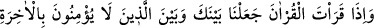
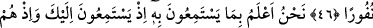

KAPALI KALBLER
SAĞIR KULAKLAR
45. Biz, Kur’an okuduğun zaman, seninle âhirete inanmayanların arasına gizleyici
bir örtü çekeriz.
46. Ayrıca, onu anlamamaları için kalplerine bir kapalılık ve kulaklarına bir
ağırlık veririz. Sen, Kur’an’da Rabbinin birliğini andığında onlar, canları sıkılmış bir
vaziyette gerisin geri dönüp giderler.
47. Biz, onların seni dinlerken ne maksatla dinlediklerini, kendi aralarında
fısıldaşırlarken de o zalimlerin: “Siz, büyülenmiş bir adamdan başkasına
uymuyorsunuz!” dediklerini çok iyi biliriz.
48. Bak; senin için ne türlü benzetmeler yaptılar! Bu yüzden, (öyle bir) saptılar
ki, artık (doğru) yolu bulamayacaklardır.
“Biz, Kur’an okuduğun zaman, seninle âhirete inanmayanların arasına gizleyici bir
örtü çekeriz.” Âhirete inanmayanlar, Kureyş kâfirleridir. Çünkü onlar öldükten sonra
dirilmeyi inkâr ediyorlardı. Onlarla senin arana çektiğimiz perde onların, senin
üzerinde bulunduğun peygamberliği, nübüvveti ve senin yüceliğini anlamalarına engel
olur. Bu sebeble onlar: “Siz ancak sihirlenmiş bir adama uyuyorsunuz.” (el-Furkân,
25/8) deme cesaretinde bulundular.
“Gizleyici bir örtü” ifâdesini Hasan Basrî, hissî olmayan ve görülmeyen, konulduğu
şey üzerinde örtülü olan bir perde veya örtüsü bulunan perde olarak tefsir etmiştir. el-
Kevâşî’de der ki: Müşrikler Hz. Peygamber (s.a.)’e namaz kılarken eziyet ediyorlardı.
Ümmü Leheb ona atmak için bir taşla geldi, bunun üzerine bu âyet indi.”
Bu durumda “Kur’ân okuduğun zaman” ifâdesinin mânâsı “Namaz kıldığın zaman”
demek olur. Namaz Kur’ân’ı da içine aldığı için Allah salât (namaz) kelimesini Kur’ân
diye ifâde etti. Nitekim “Kur’ân okunduğu zaman onu dinleyin ve susun.” (el-A‘râf,